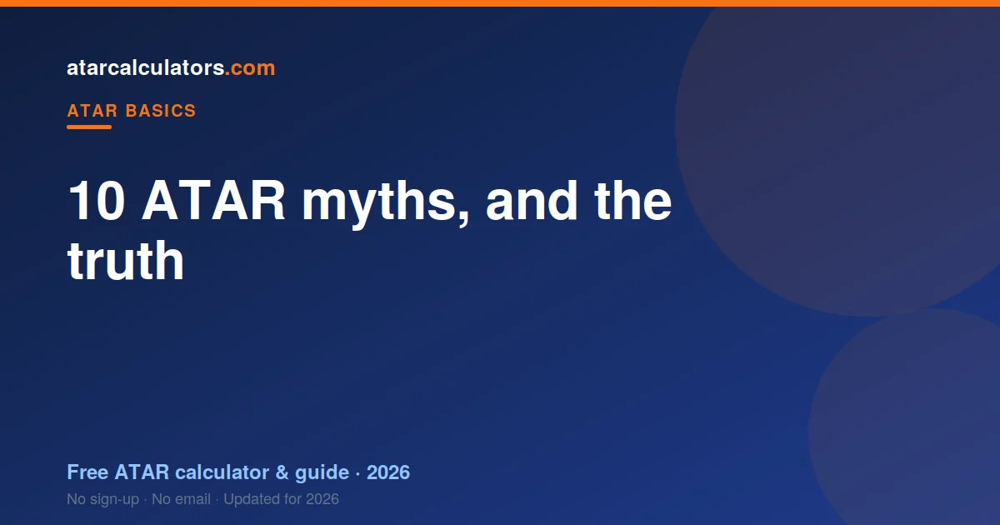
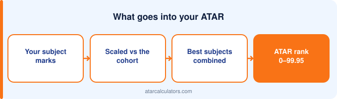

Many common beliefs about the ATAR are wrong. The ATAR is a rank, not a percentage. Hard subjects do not automatically scale up. Your school’s reputation does not change your ATAR. You cannot game scaling, and a low ATAR is not a fail. Knowing the truth helps you make smarter choices in Year 12.
Key takeaways
- The ATAR is a rank, not a percentage of questions you got right.
- Hard subjects do not automatically scale up — strong cohorts do.
- Your school’s reputation does not change your ATAR.
- You cannot game scaling — a strong result always beats a weak one.
- A low ATAR is not a fail, and many pathways exist.
- The ATAR measures a rank at one point in time, not how smart you are.

Myth 1: The ATAR is a percentage
This is the big one. An ATAR of 80 does not mean you scored 80%. It means you finished ahead of about 80% of your age group. The ATAR is a rank, a position in a line, not a mark.
Why it matters: students who think it is a percentage misjudge everything else, from what counts as “good” to how scaling works. Get this one right and the rest follows.
Myth 2: Hard subjects always scale up
Not true. A subject scales up because the students taking it are strong across all their subjects, not because the content is difficult. A hard subject with a mixed cohort can scale modestly.
Why it matters: students pick brutal subjects they struggle in, chasing a scaling boost that never comes. A strong result in a subject you are good at almost always beats a weak result in a “high-scaling” one. See how scaling really works.
Myth 3: Your school’s reputation changes your ATAR
It does not. Your ATAR is worked out at the state level, against every student, using the same rules for everyone. A strong student at a small school is treated exactly like a strong student at a famous one.
What your school affects is teaching and support, which can help you perform. But no school gets a bonus baked into its students’ ranks. The rank is yours, not your school’s.
Myth 4: The ATAR is the only way into university
Far from it. The ATAR is the main path straight from Year 12, but universities run many others: diplomas that lead into degrees, TAFE pathways, enabling and foundation programs, portfolios, auditions and special entry schemes.
Why it matters: students who fixate on the ATAR miss backup routes that lead to the same degree. If your rank falls short, a pathway often still gets you there.
Myth 5: You can game scaling
You cannot. Scaling rewards your position within a subject’s cohort, not the subject you chose. Picking a “high-scaling” subject you are weak in just puts you low in a strong group, which gains you nothing.
The only real strategy is to do well in whatever you take. Scaling is designed to be fair, so there is no shortcut around simply performing.
Myth 6: Dropping a subject always helps your ATAR
Usually it does not. Your ATAR uses your best results, so a weak subject often counts for little or nothing already. Dropping it rarely lifts your rank, and it can leave you with no safety net.
Keeping an extra subject you can do reasonably well in protects you: if one subject goes badly, your best results still carry your ATAR. Think twice before dropping.
Myth 7: You need to top the state for a high ATAR
No. You do not need to top any subject to get a high ATAR. Consistent, strong results across a few subjects produce a high rank, because your best scaled scores are combined.
Plenty of students reach the 90s without ever coming first in a class. Steady strength beats a single spike almost every time.
Myth 8: A low ATAR means you failed Year 12
It does not. Your ATAR and your Year 12 certificate are separate things. You can complete Year 12 successfully and still receive a low ATAR, because the ATAR is only a rank for university entry.
A low ATAR simply means a lower position in the rank that year. It is not a fail, and it does not close off further study, thanks to the many pathways available.
Myth 9: The ATAR measures how smart you are
It does not. The ATAR measures where your Year 12 results ranked at one point in time, in a specific set of subjects. It says nothing about your creativity, your character, or your potential.
Plenty of successful people had modest ATARs, and plenty changed direction entirely after school. The number is useful for admissions and narrow beyond that.
Myth 10: Your ATAR follows you for life
It does not. Your ATAR opens the door to your first course, and after that it stops mattering. Employers do not ask for it. Once you are at university, your own marks take over.
Why it matters: the pressure feels enormous in Year 12, but the ATAR’s job is narrow and short-lived. It is a key for one door, not a label for your life.
See your real ATAR estimate
The best cure for ATAR myths is real numbers. Our ATAR calculators use the latest official scaling to estimate your ATAR from your actual marks, so you can replace rumours with a figure.
Seeing how your subjects really scale, and how your best results combine, makes the whole system far less mysterious. Try it with a few subject combinations.
Myth 11: Only the final exam counts
In most states, it does not. A large part of your result comes from assessments across the year, not just the final exam. In some subjects the internal work is the majority of your mark.
Why it matters: students who coast all year, planning to “cram for the exam”, throw away marks they have already been offered. Every assessment through the year is a chance to build your result, so treat them all as if they count.
Myth 12: You should pick subjects purely for scaling
You should not. Scaling only rewards how you rank within a subject, so a subject that scales well does nothing for you if you score poorly in it. Interest and ability matter far more than the scaling table.
Why it matters: students choose subjects they dislike and struggle in, chasing scaling, and end up with weaker results than if they had followed their strengths. Pick subjects you can do well in and stay motivated for — that is what lifts your rank.
Where these myths come from
Most ATAR myths come from half-remembered advice, passed down from older students and repeated until they sound like fact. Others come from confusing the ATAR with a simple mark, which makes the rest seem mysterious.
The cure is the same each time: go back to the basics. The ATAR is a rank, built from scaled results, combining your best subjects. Hold onto that, and most myths fall apart on their own.
Common questions
Is the ATAR a mark out of 100?
No. The ATAR is a rank from 0.00 to 99.95, not a mark out of 100. An ATAR of 80 means you finished ahead of about 80% of your age group, not that you scored 80%.
Do hard subjects scale higher?
Not automatically. A subject scales up because its students are strong across all their subjects, not because the content is hard. A strong result in a subject you are good at usually beats a weak result in a high-scaling one.
Does my school's reputation change my ATAR?
No. Your ATAR is calculated at the state level against every student, using the same rules for everyone. Your school affects teaching and support, but not a bonus in your rank.
Is the ATAR the only way into university?
No. The ATAR is the main path straight from Year 12, but universities also offer diplomas, TAFE pathways, enabling programs, portfolios, auditions and special entry schemes.
Does dropping a subject improve your ATAR?
Usually not. Your ATAR uses your best results, so a weak subject often counts for little already. Keeping an extra subject as a safety net is often the smarter choice.
Does only the final exam count towards my ATAR?
No. In most states a large part of your result comes from assessments across the year, and in some subjects the internal work is the majority of your mark. Every assessment counts, not just the exam.
Should I choose subjects only for scaling?
No. Scaling only rewards your rank within a subject, so a high-scaling subject helps nothing if you score poorly in it. Choose subjects you can do well in and stay motivated for.